- Introduction
- 1. Chapter 2. Statistical Learning
- 2. Chapter 3. Linear Regression
- 3. Chapter 4. Classification
- 4. Chapter 5. Resampling Methods
- 5. Chapter 6. Linear Model Selection and Regularization
- 6. Chapter 7. Moving Beyond Linearity
- 7. Chapter 8. Tree-Based Methods
- 8. Chapter 9. Support Vector Machines
- 9. Chapter 10. Unsupervised Learning
- 10. References
- Published with GitBook
6.5 Lab 1: Subset Selection Methods
6.5.1 Best Subset Selection
We start by loading the ISLR package and examining the Hitters dataset. We use the is.na() function and count the number of observations where the Salary variable is missing.
library(ISLR)
head(Hitters)
## AtBat Hits HmRun Runs RBI Walks Years CAtBat CHits
## -Andy Allanson 293 66 1 30 29 14 1 293 66
## -Alan Ashby 315 81 7 24 38 39 14 3449 835
## -Alvin Davis 479 130 18 66 72 76 3 1624 457
## -Andre Dawson 496 141 20 65 78 37 11 5628 1575
## -Andres Galarraga 321 87 10 39 42 30 2 396 101
## -Alfredo Griffin 594 169 4 74 51 35 11 4408 1133
## CHmRun CRuns CRBI CWalks League Division PutOuts Assists
## -Andy Allanson 1 30 29 14 A E 446 33
## -Alan Ashby 69 321 414 375 N W 632 43
## -Alvin Davis 63 224 266 263 A W 880 82
## -Andre Dawson 225 828 838 354 N E 200 11
## -Andres Galarraga 12 48 46 33 N E 805 40
## -Alfredo Griffin 19 501 336 194 A W 282 421
## Errors Salary NewLeague
## -Andy Allanson 20 NA A
## -Alan Ashby 10 475.0 N
## -Alvin Davis 14 480.0 A
## -Andre Dawson 3 500.0 N
## -Andres Galarraga 4 91.5 N
## -Alfredo Griffin 25 750.0 A
names(Hitters)
## [1] "AtBat" "Hits" "HmRun" "Runs" "RBI"
## [6] "Walks" "Years" "CAtBat" "CHits" "CHmRun"
## [11] "CRuns" "CRBI" "CWalks" "League" "Division"
## [16] "PutOuts" "Assists" "Errors" "Salary" "NewLeague"
dim(Hitters)
## [1] 322 20
sum(is.na(Hitters$Salary))
## [1] 59
We can remove all observations with missing values with na.omit().
Hitters <- na.omit(Hitters)
dim(Hitters)
## [1] 263 20
sum(is.na(Hitters))
## [1] 0
We use the regsubsets() function to identify the best model based on subset selection quantified by the residual sum of squares (RSS) for each model.
library(leaps)
regfit.full <- regsubsets(Salary ~ ., Hitters)
summary(regfit.full)
## Subset selection object
## Call: regsubsets.formula(Salary ~ ., Hitters)
## 19 Variables (and intercept)
## Forced in Forced out
## AtBat FALSE FALSE
## Hits FALSE FALSE
## HmRun FALSE FALSE
## Runs FALSE FALSE
## RBI FALSE FALSE
## Walks FALSE FALSE
## Years FALSE FALSE
## CAtBat FALSE FALSE
## CHits FALSE FALSE
## CHmRun FALSE FALSE
## CRuns FALSE FALSE
## CRBI FALSE FALSE
## CWalks FALSE FALSE
## LeagueN FALSE FALSE
## DivisionW FALSE FALSE
## PutOuts FALSE FALSE
## Assists FALSE FALSE
## Errors FALSE FALSE
## NewLeagueN FALSE FALSE
## 1 subsets of each size up to 8
## Selection Algorithm: exhaustive
## AtBat Hits HmRun Runs RBI Walks Years CAtBat CHits CHmRun CRuns
## 1 ( 1 ) " " " " " " " " " " " " " " " " " " " " " "
## 2 ( 1 ) " " "*" " " " " " " " " " " " " " " " " " "
## 3 ( 1 ) " " "*" " " " " " " " " " " " " " " " " " "
## 4 ( 1 ) " " "*" " " " " " " " " " " " " " " " " " "
## 5 ( 1 ) "*" "*" " " " " " " " " " " " " " " " " " "
## 6 ( 1 ) "*" "*" " " " " " " "*" " " " " " " " " " "
## 7 ( 1 ) " " "*" " " " " " " "*" " " "*" "*" "*" " "
## 8 ( 1 ) "*" "*" " " " " " " "*" " " " " " " "*" "*"
## CRBI CWalks LeagueN DivisionW PutOuts Assists Errors NewLeagueN
## 1 ( 1 ) "*" " " " " " " " " " " " " " "
## 2 ( 1 ) "*" " " " " " " " " " " " " " "
## 3 ( 1 ) "*" " " " " " " "*" " " " " " "
## 4 ( 1 ) "*" " " " " "*" "*" " " " " " "
## 5 ( 1 ) "*" " " " " "*" "*" " " " " " "
## 6 ( 1 ) "*" " " " " "*" "*" " " " " " "
## 7 ( 1 ) " " " " " " "*" "*" " " " " " "
## 8 ( 1 ) " " "*" " " "*" "*" " " " " " "
The nvmax parameter can be use to control the number of variables in the model. The default used by regsubsets() is 8.
regfit.full <- regsubsets(Salary ~ ., data = Hitters, nvmax = 19)
reg.summary <- summary(regfit.full)
We can look at the components of the reg.summary variable using the names() function and examine the (R^2) statistic stored in rsq.
names(reg.summary)
## [1] "which" "rsq" "rss" "adjr2" "cp" "bic" "outmat" "obj"
reg.summary$rsq
## [1] 0.3214501 0.4252237 0.4514294 0.4754067 0.4908036 0.5087146 0.5141227
## [8] 0.5285569 0.5346124 0.5404950 0.5426153 0.5436302 0.5444570 0.5452164
## [15] 0.5454692 0.5457656 0.5459518 0.5460945 0.5461159
Next, we plot the RSS and adjusted (R^2) and add a point where (R^2) is at its maximum using the which.max() function.
par(mfrow = c(2, 2))
plot(reg.summary$rss, xlab = "Number of Variables", ylab = "RSS", type = "l")
plot(reg.summary$adjr2, xlab = "Number of Variables", ylab = "Adjusted RSq", type = "l")
adjr2.max <- which.max(reg.summary$adjr2)
points(adjr2.max, reg.summary$adjr2[adjr2.max], col = "red", cex = 2, pch = 20)
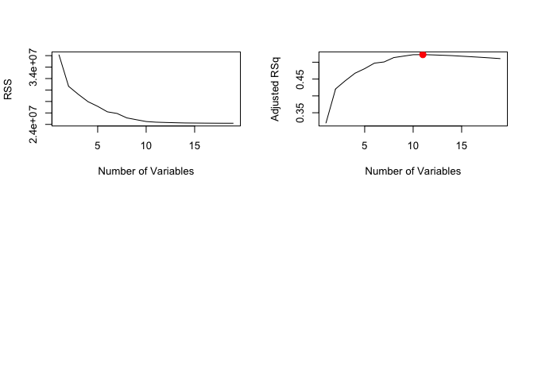
We can also plot the the (C_p) statistic and BIC and identify the minimum points for each statistic using the which.min() function.
plot(reg.summary$cp, xlab = "Number of Variables", ylab = "Cp", type = "l")
cp.min <- which.min(reg.summary$cp)
points(cp.min, reg.summary$cp[cp.min], col = "red", cex = 2, pch = 20)
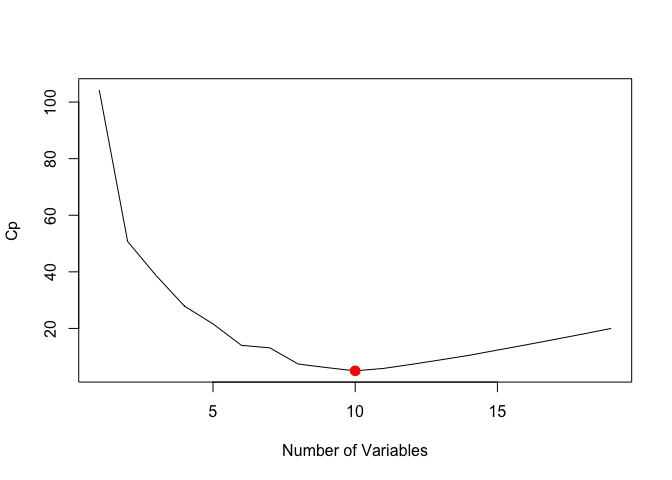
bic.min <- which.min(reg.summary$bic)
plot(reg.summary$bic, xlab = "Number of Variables", ylab = "BIC", type = "l")
points(bic.min, reg.summary$bic[bic.min], col = "red", cex = 2, pch = 20)
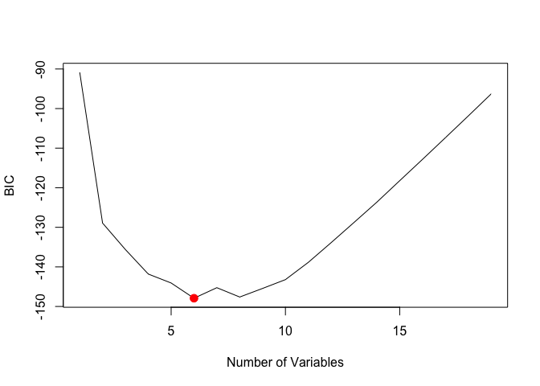
The estimated models from regsubsets() can be directly plotted to compare the differences based on the values of (R^2), adjusted (R^2), (C_p) and BIC statistics.
plot(regfit.full, scale = "r2")
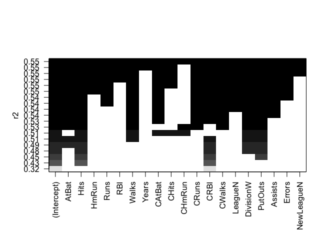
plot(regfit.full, scale = "adjr2")
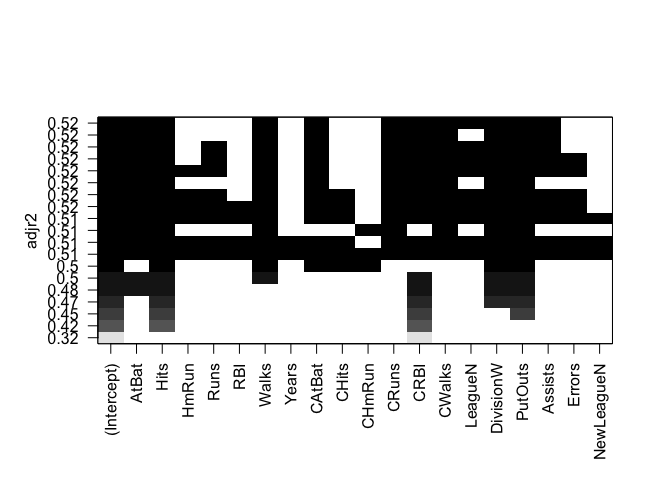
plot(regfit.full, scale = "Cp")
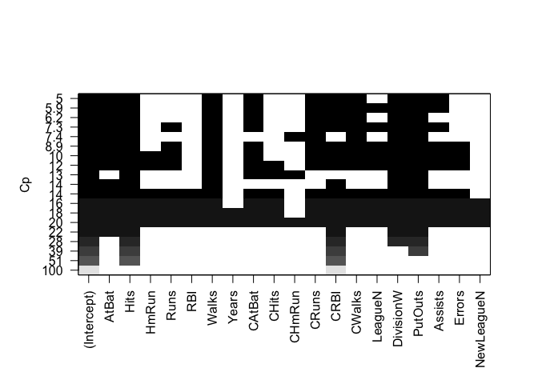
plot(regfit.full, scale = "bic")

To show the coefficients associated with the model with the lowest BIC, we use the coef() function.
coef(regfit.full, bic.min)
## (Intercept) AtBat Hits Walks CRBI
## 91.5117981 -1.8685892 7.6043976 3.6976468 0.6430169
## DivisionW PutOuts
## -122.9515338 0.2643076
6.5.2 Forward and Backward Stepwise Selection
The default method used by regsubsets() is exhaustive but we can change it to forward or backward and compare the results.
regfit.fwd <- regsubsets(Salary ~ ., data = Hitters, nvmax = 19, method = "forward")
summary(regfit.fwd)
## Subset selection object
## Call: regsubsets.formula(Salary ~ ., data = Hitters, nvmax = 19, method = "forward")
## 19 Variables (and intercept)
## Forced in Forced out
## AtBat FALSE FALSE
## Hits FALSE FALSE
## HmRun FALSE FALSE
## Runs FALSE FALSE
## RBI FALSE FALSE
## Walks FALSE FALSE
## Years FALSE FALSE
## CAtBat FALSE FALSE
## CHits FALSE FALSE
## CHmRun FALSE FALSE
## CRuns FALSE FALSE
## CRBI FALSE FALSE
## CWalks FALSE FALSE
## LeagueN FALSE FALSE
## DivisionW FALSE FALSE
## PutOuts FALSE FALSE
## Assists FALSE FALSE
## Errors FALSE FALSE
## NewLeagueN FALSE FALSE
## 1 subsets of each size up to 19
## Selection Algorithm: forward
## AtBat Hits HmRun Runs RBI Walks Years CAtBat CHits CHmRun CRuns
## 1 ( 1 ) " " " " " " " " " " " " " " " " " " " " " "
## 2 ( 1 ) " " "*" " " " " " " " " " " " " " " " " " "
## 3 ( 1 ) " " "*" " " " " " " " " " " " " " " " " " "
## 4 ( 1 ) " " "*" " " " " " " " " " " " " " " " " " "
## 5 ( 1 ) "*" "*" " " " " " " " " " " " " " " " " " "
## 6 ( 1 ) "*" "*" " " " " " " "*" " " " " " " " " " "
## 7 ( 1 ) "*" "*" " " " " " " "*" " " " " " " " " " "
## 8 ( 1 ) "*" "*" " " " " " " "*" " " " " " " " " "*"
## 9 ( 1 ) "*" "*" " " " " " " "*" " " "*" " " " " "*"
## 10 ( 1 ) "*" "*" " " " " " " "*" " " "*" " " " " "*"
## 11 ( 1 ) "*" "*" " " " " " " "*" " " "*" " " " " "*"
## 12 ( 1 ) "*" "*" " " "*" " " "*" " " "*" " " " " "*"
## 13 ( 1 ) "*" "*" " " "*" " " "*" " " "*" " " " " "*"
## 14 ( 1 ) "*" "*" "*" "*" " " "*" " " "*" " " " " "*"
## 15 ( 1 ) "*" "*" "*" "*" " " "*" " " "*" "*" " " "*"
## 16 ( 1 ) "*" "*" "*" "*" "*" "*" " " "*" "*" " " "*"
## 17 ( 1 ) "*" "*" "*" "*" "*" "*" " " "*" "*" " " "*"
## 18 ( 1 ) "*" "*" "*" "*" "*" "*" "*" "*" "*" " " "*"
## 19 ( 1 ) "*" "*" "*" "*" "*" "*" "*" "*" "*" "*" "*"
## CRBI CWalks LeagueN DivisionW PutOuts Assists Errors NewLeagueN
## 1 ( 1 ) "*" " " " " " " " " " " " " " "
## 2 ( 1 ) "*" " " " " " " " " " " " " " "
## 3 ( 1 ) "*" " " " " " " "*" " " " " " "
## 4 ( 1 ) "*" " " " " "*" "*" " " " " " "
## 5 ( 1 ) "*" " " " " "*" "*" " " " " " "
## 6 ( 1 ) "*" " " " " "*" "*" " " " " " "
## 7 ( 1 ) "*" "*" " " "*" "*" " " " " " "
## 8 ( 1 ) "*" "*" " " "*" "*" " " " " " "
## 9 ( 1 ) "*" "*" " " "*" "*" " " " " " "
## 10 ( 1 ) "*" "*" " " "*" "*" "*" " " " "
## 11 ( 1 ) "*" "*" "*" "*" "*" "*" " " " "
## 12 ( 1 ) "*" "*" "*" "*" "*" "*" " " " "
## 13 ( 1 ) "*" "*" "*" "*" "*" "*" "*" " "
## 14 ( 1 ) "*" "*" "*" "*" "*" "*" "*" " "
## 15 ( 1 ) "*" "*" "*" "*" "*" "*" "*" " "
## 16 ( 1 ) "*" "*" "*" "*" "*" "*" "*" " "
## 17 ( 1 ) "*" "*" "*" "*" "*" "*" "*" "*"
## 18 ( 1 ) "*" "*" "*" "*" "*" "*" "*" "*"
## 19 ( 1 ) "*" "*" "*" "*" "*" "*" "*" "*"
regfit.bwd <- regsubsets(Salary ~ ., data = Hitters, nvmax = 19, method = "backward")
summary(regfit.bwd)
## Subset selection object
## Call: regsubsets.formula(Salary ~ ., data = Hitters, nvmax = 19, method = "backward")
## 19 Variables (and intercept)
## Forced in Forced out
## AtBat FALSE FALSE
## Hits FALSE FALSE
## HmRun FALSE FALSE
## Runs FALSE FALSE
## RBI FALSE FALSE
## Walks FALSE FALSE
## Years FALSE FALSE
## CAtBat FALSE FALSE
## CHits FALSE FALSE
## CHmRun FALSE FALSE
## CRuns FALSE FALSE
## CRBI FALSE FALSE
## CWalks FALSE FALSE
## LeagueN FALSE FALSE
## DivisionW FALSE FALSE
## PutOuts FALSE FALSE
## Assists FALSE FALSE
## Errors FALSE FALSE
## NewLeagueN FALSE FALSE
## 1 subsets of each size up to 19
## Selection Algorithm: backward
## AtBat Hits HmRun Runs RBI Walks Years CAtBat CHits CHmRun CRuns
## 1 ( 1 ) " " " " " " " " " " " " " " " " " " " " "*"
## 2 ( 1 ) " " "*" " " " " " " " " " " " " " " " " "*"
## 3 ( 1 ) " " "*" " " " " " " " " " " " " " " " " "*"
## 4 ( 1 ) "*" "*" " " " " " " " " " " " " " " " " "*"
## 5 ( 1 ) "*" "*" " " " " " " "*" " " " " " " " " "*"
## 6 ( 1 ) "*" "*" " " " " " " "*" " " " " " " " " "*"
## 7 ( 1 ) "*" "*" " " " " " " "*" " " " " " " " " "*"
## 8 ( 1 ) "*" "*" " " " " " " "*" " " " " " " " " "*"
## 9 ( 1 ) "*" "*" " " " " " " "*" " " "*" " " " " "*"
## 10 ( 1 ) "*" "*" " " " " " " "*" " " "*" " " " " "*"
## 11 ( 1 ) "*" "*" " " " " " " "*" " " "*" " " " " "*"
## 12 ( 1 ) "*" "*" " " "*" " " "*" " " "*" " " " " "*"
## 13 ( 1 ) "*" "*" " " "*" " " "*" " " "*" " " " " "*"
## 14 ( 1 ) "*" "*" "*" "*" " " "*" " " "*" " " " " "*"
## 15 ( 1 ) "*" "*" "*" "*" " " "*" " " "*" "*" " " "*"
## 16 ( 1 ) "*" "*" "*" "*" "*" "*" " " "*" "*" " " "*"
## 17 ( 1 ) "*" "*" "*" "*" "*" "*" " " "*" "*" " " "*"
## 18 ( 1 ) "*" "*" "*" "*" "*" "*" "*" "*" "*" " " "*"
## 19 ( 1 ) "*" "*" "*" "*" "*" "*" "*" "*" "*" "*" "*"
## CRBI CWalks LeagueN DivisionW PutOuts Assists Errors NewLeagueN
## 1 ( 1 ) " " " " " " " " " " " " " " " "
## 2 ( 1 ) " " " " " " " " " " " " " " " "
## 3 ( 1 ) " " " " " " " " "*" " " " " " "
## 4 ( 1 ) " " " " " " " " "*" " " " " " "
## 5 ( 1 ) " " " " " " " " "*" " " " " " "
## 6 ( 1 ) " " " " " " "*" "*" " " " " " "
## 7 ( 1 ) " " "*" " " "*" "*" " " " " " "
## 8 ( 1 ) "*" "*" " " "*" "*" " " " " " "
## 9 ( 1 ) "*" "*" " " "*" "*" " " " " " "
## 10 ( 1 ) "*" "*" " " "*" "*" "*" " " " "
## 11 ( 1 ) "*" "*" "*" "*" "*" "*" " " " "
## 12 ( 1 ) "*" "*" "*" "*" "*" "*" " " " "
## 13 ( 1 ) "*" "*" "*" "*" "*" "*" "*" " "
## 14 ( 1 ) "*" "*" "*" "*" "*" "*" "*" " "
## 15 ( 1 ) "*" "*" "*" "*" "*" "*" "*" " "
## 16 ( 1 ) "*" "*" "*" "*" "*" "*" "*" " "
## 17 ( 1 ) "*" "*" "*" "*" "*" "*" "*" "*"
## 18 ( 1 ) "*" "*" "*" "*" "*" "*" "*" "*"
## 19 ( 1 ) "*" "*" "*" "*" "*" "*" "*" "*"
coef(regfit.full, 7)
## (Intercept) Hits Walks CAtBat CHits
## 79.4509472 1.2833513 3.2274264 -0.3752350 1.4957073
## CHmRun DivisionW PutOuts
## 1.4420538 -129.9866432 0.2366813
coef(regfit.fwd, 7)
## (Intercept) AtBat Hits Walks CRBI
## 109.7873062 -1.9588851 7.4498772 4.9131401 0.8537622
## CWalks DivisionW PutOuts
## -0.3053070 -127.1223928 0.2533404
coef(regfit.bwd, 7)
## (Intercept) AtBat Hits Walks CRuns
## 105.6487488 -1.9762838 6.7574914 6.0558691 1.1293095
## CWalks DivisionW PutOuts
## -0.7163346 -116.1692169 0.3028847
6.5.3 Choosing Among Models Using the Validation Set Approach and Cross-Validation
For validation set approach, we split the dataset into a training subset and a test subset. In order to ensure that the results are consistent over multiple iterations, we set the random seed with set.seed() before calling sample().
set.seed(1)
train <- sample(c(TRUE, FALSE), nrow(Hitters), rep = TRUE)
test <- (!train)
We use regsubsets() as we did in the last section, but limit the estimation to the training subset.
regfit.best <- regsubsets(Salary ~ ., data = Hitters[train, ], nvmax = 19)
We create a matrix from the test subset using model.matrix().
test.mat <- model.matrix(Salary ~ ., data = Hitters[test, ])
Next, we compute the validation error for each model.
val.errors <- rep(NA, 19)
for (i in 1:19) {
coefi <- coef(regfit.best, id = i)
pred <- test.mat[, names(coefi)] %*% coefi
val.errors[i] <- mean((Hitters$Salary[test] - pred)^2)
}
We examine the validation error for each model and identify the best model with the lowest error.
val.errors
## [1] 220968.0 169157.1 178518.2 163426.1 168418.1 171270.6 162377.1
## [8] 157909.3 154055.7 148162.1 151156.4 151742.5 152214.5 157358.7
## [15] 158541.4 158743.3 159972.7 159859.8 160105.6
min.val.errors <- which.min(val.errors)
coef(regfit.best, min.val.errors)
## (Intercept) AtBat Hits Walks CAtBat CHits
## -80.2751499 -1.4683816 7.1625314 3.6430345 -0.1855698 1.1053238
## CHmRun CWalks LeagueN DivisionW PutOuts
## 1.3844863 -0.7483170 84.5576103 -53.0289658 0.2381662
We can combine these steps into a function that can be called repeatedly when running k-fold cross-validation.
predict.regsubsets <- function(object, newdata, id, ...) {
form <- as.formula(object$call[[2]])
mat <- model.matrix(form, newdata)
coefi <- coef(object, id = id)
xvars <- names(coefi)
mat[, xvars] %*% coefi
}
As a final step, we run regsubsets() on the full dataset and examine the coefficients associated with the model that has the lower validation error.
regfit.best <- regsubsets(Salary ~ ., data = Hitters, nvmax = 19)
coef(regfit.best, min.val.errors)
## (Intercept) AtBat Hits Walks CAtBat
## 162.5354420 -2.1686501 6.9180175 5.7732246 -0.1300798
## CRuns CRBI CWalks DivisionW PutOuts
## 1.4082490 0.7743122 -0.8308264 -112.3800575 0.2973726
## Assists
## 0.2831680
For cross-validation, we create the number of folds needed (10, in this case) and allocate a matrix for storing the results.
k <- 10
set.seed(1)
folds <- sample(1:k, nrow(Hitters), replace = TRUE)
cv.errors <- matrix(NA, k, 19, dimnames = list(NULL, paste(1:19)))
We then run through each fold in a for loop and predict the salary using our predict function. We then calculate the validation error for each fold and save them in the matrix created above.
for (j in 1:k) {
best.fit <- regsubsets(Salary ~ ., data = Hitters[folds != j, ], nvmax = 19)
for (i in 1:19) {
pred <- predict(best.fit, Hitters[folds == j, ], id = i)
cv.errors[j, i] <- mean((Hitters$Salary[folds == j] - pred)^2)
}
}
We calculate the mean error for all subsets by applying mean to each column using the apply() function
mean.cv.errors <- apply(cv.errors, 2, mean)
mean.cv.errors
## 1 2 3 4 5 6 7 8
## 160093.5 140196.8 153117.0 151159.3 146841.3 138302.6 144346.2 130207.7
## 9 10 11 12 13 14 15 16
## 129459.6 125334.7 125153.8 128273.5 133461.0 133974.6 131825.7 131882.8
## 17 18 19
## 132750.9 133096.2 132804.7
par(mfrow = c(1, 1))
plot(mean.cv.errors, type = "b")
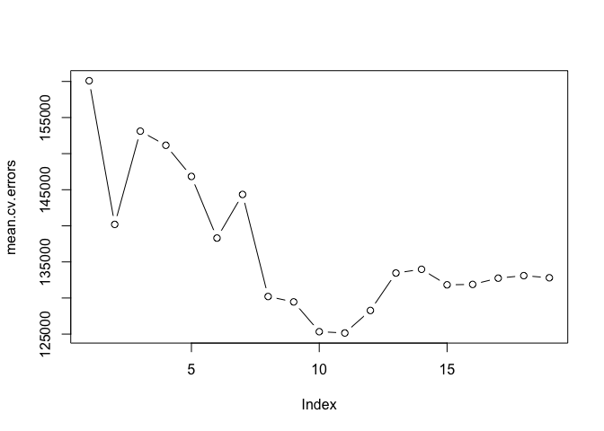
Finally we run regsubsets() on the full dataset and show the coefficients for the best performing model.
reg.best <- regsubsets(Salary ~ ., data = Hitters, nvmax = 19)
coef(reg.best, which.min(mean.cv.errors))
## (Intercept) AtBat Hits Walks CAtBat
## 135.7512195 -2.1277482 6.9236994 5.6202755 -0.1389914
## CRuns CRBI CWalks LeagueN DivisionW
## 1.4553310 0.7852528 -0.8228559 43.1116152 -111.1460252
## PutOuts Assists
## 0.2894087 0.2688277
6.6 Lab 2: Ridge Regression and the Lasso
In order to run ridge regression, we first need to create a matrix from our dataset using the model.matrix() function.
x <- model.matrix(Salary ~ ., Hitters)[, -1]
y <- Hitters$Salary
6.6.1 Ridge Regression
The glmnet package provides functionality to fit ridge regression and lasso models. We load the package and call glmnet() to perform ridge regression.
library(glmnet)
## Loading required package: Matrix
## Loading required package: foreach
## Loaded glmnet 2.0-2
grid <- 10^seq(10, -2, length = 100)
ridge.mod <- glmnet(x, y, alpha = 0, lambda = grid)
dim(coef(ridge.mod))
## [1] 20 100
We can look at the coefficients at different values for (\lambda). Here we randomly choose two different values and notice that smaller values of (\lambda) result in larger coefficient estimates and vice-versa.
ridge.mod$lambda[50]
## [1] 11497.57
coef(ridge.mod)[, 50]
## (Intercept) AtBat Hits HmRun Runs
## 407.356050200 0.036957182 0.138180344 0.524629976 0.230701523
## RBI Walks Years CAtBat CHits
## 0.239841459 0.289618741 1.107702929 0.003131815 0.011653637
## CHmRun CRuns CRBI CWalks LeagueN
## 0.087545670 0.023379882 0.024138320 0.025015421 0.085028114
## DivisionW PutOuts Assists Errors NewLeagueN
## -6.215440973 0.016482577 0.002612988 -0.020502690 0.301433531
sqrt(sum(coef(ridge.mod)[-1, 50]^2))
## [1] 6.360612
ridge.mod$lambda[60]
## [1] 705.4802
coef(ridge.mod)[, 60]
## (Intercept) AtBat Hits HmRun Runs
## 54.32519950 0.11211115 0.65622409 1.17980910 0.93769713
## RBI Walks Years CAtBat CHits
## 0.84718546 1.31987948 2.59640425 0.01083413 0.04674557
## CHmRun CRuns CRBI CWalks LeagueN
## 0.33777318 0.09355528 0.09780402 0.07189612 13.68370191
## DivisionW PutOuts Assists Errors NewLeagueN
## -54.65877750 0.11852289 0.01606037 -0.70358655 8.61181213
sqrt(sum(coef(ridge.mod)[-1, 60]^2))
## [1] 57.11001
We can get ridge regression coefficients for any value of (\lambda) using predict.
predict(ridge.mod, s = 50, type = "coefficients")[1:20, ]
## (Intercept) AtBat Hits HmRun Runs
## 4.876610e+01 -3.580999e-01 1.969359e+00 -1.278248e+00 1.145892e+00
## RBI Walks Years CAtBat CHits
## 8.038292e-01 2.716186e+00 -6.218319e+00 5.447837e-03 1.064895e-01
## CHmRun CRuns CRBI CWalks LeagueN
## 6.244860e-01 2.214985e-01 2.186914e-01 -1.500245e-01 4.592589e+01
## DivisionW PutOuts Assists Errors NewLeagueN
## -1.182011e+02 2.502322e-01 1.215665e-01 -3.278600e+00 -9.496680e+00
Next, we can cross-validation on ridge regression by first splitting the dataset into training and test subsets.
set.seed(1)
train <- sample(1:nrow(x), nrow(x)/2)
test <- (-train)
y.test <- y[test]
We estimate the parameters with glmnet() over the training set and predict the values on the test set to calculate the validation error.
ridge.mod <- glmnet(x[train, ], y[train], alpha = 0, lambda = grid, thresh = 1e-12)
ridge.pred <- predict(ridge.mod, s = 4, newx = x[test, ])
mean((ridge.pred - y.test)^2)
## [1] 101036.8
mean((mean(y[train]) - y.test)^2)
## [1] 193253.1
In the previous example, we used a value for (\lambda = 4) when evaluating the model on the test set. We can use a large value for (lamba) and see the difference in mean error.
ridge.pred <- predict(ridge.mod, s = 1e+10, newx = x[test, ])
mean((ridge.pred - y.test)^2)
## [1] 193253.1
We can also compare the results with a least squares model where (\lambda = 0).
ridge.pred <- predict(ridge.mod, s = 0, newx = x[test, ], exact = T)
mean((ridge.pred - y.test)^2)
## [1] 114783.1
lm(y ~ x, subset = train)
##
## Call:
## lm(formula = y ~ x, subset = train)
##
## Coefficients:
## (Intercept) xAtBat xHits xHmRun xRuns
## 299.42849 -2.54027 8.36682 11.64512 -9.09923
## xRBI xWalks xYears xCAtBat xCHits
## 2.44105 9.23440 -22.93673 -0.18154 -0.11598
## xCHmRun xCRuns xCRBI xCWalks xLeagueN
## -1.33888 3.32838 0.07536 -1.07841 59.76065
## xDivisionW xPutOuts xAssists xErrors xNewLeagueN
## -98.86233 0.34087 0.34165 -0.64207 -0.67442
predict(ridge.mod, s = 0, exact = T, type = "coefficients")[1:20, ]
## (Intercept) AtBat Hits HmRun Runs
## 299.42883596 -2.54014665 8.36611719 11.64400720 -9.09877719
## RBI Walks Years CAtBat CHits
## 2.44152119 9.23403909 -22.93584442 -0.18160843 -0.11561496
## CHmRun CRuns CRBI CWalks LeagueN
## -1.33836534 3.32817777 0.07511771 -1.07828647 59.76529059
## DivisionW PutOuts Assists Errors NewLeagueN
## -98.85996590 0.34086400 0.34165605 -0.64205839 -0.67606314
We can choose different values for (\lambda) by running cross-vaidation on ridge regression using cv.glmnet().
set.seed(1)
cv.out <- cv.glmnet(x[train, ], y[train], alpha = 0)
plot(cv.out)
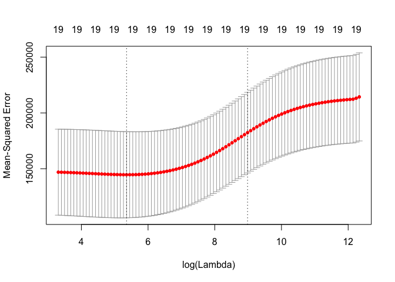
bestlam <- cv.out$lambda.min
bestlam
## [1] 211.7416
The best performing model is the one with (\lambda = 211.74).
ridge.pred <- predict(ridge.mod, s = bestlam, newx = x[test, ])
mean((ridge.pred - y.test)^2)
## [1] 96015.51
Finally, we run ridge regression on the full dataset and examine the coefficients for the model with the best MSE.
out <- glmnet(x, y, alpha = 0)
predict(out, type = "coefficients", s = bestlam)[1:20, ]
## (Intercept) AtBat Hits HmRun Runs
## 9.88487157 0.03143991 1.00882875 0.13927624 1.11320781
## RBI Walks Years CAtBat CHits
## 0.87318990 1.80410229 0.13074381 0.01113978 0.06489843
## CHmRun CRuns CRBI CWalks LeagueN
## 0.45158546 0.12900049 0.13737712 0.02908572 27.18227535
## DivisionW PutOuts Assists Errors NewLeagueN
## -91.63411299 0.19149252 0.04254536 -1.81244470 7.21208390
6.6.2 The Lasso
The lasso model can be estimated in the same way as ridge regression. The alpha = 1 parameter tells glmnet() to run lasso regression instead of ridge regression.
lasso.mod <- glmnet(x[train, ], y[train], alpha = 1, lambda = grid)
plot(lasso.mod)
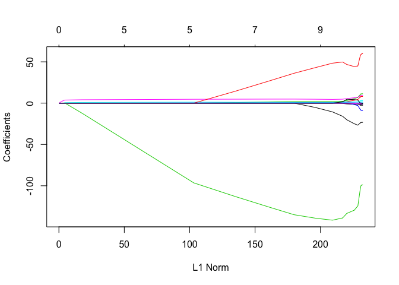
Similarly, we can perform cross-validation using identical step as we did in the last exercise on ridge regression.
set.seed(1)
cv.out <- cv.glmnet(x[train, ], y[train], alpha = 1)
plot(cv.out)
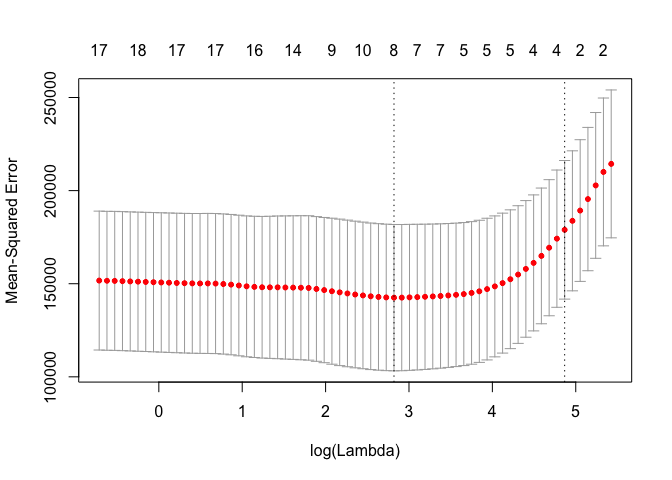
bestlam <- cv.out$lambda.min
lasso.pred <- predict(lasso.mod, s = bestlam, newx = x[test, ])
mean((lasso.pred - y.test)^2)
## [1] 100743.4
We can compare these results with ridge regression by examining the coefficient estimates.
out <- glmnet(x, y, alpha = 1, lambda = grid)
lasso.coef <- predict(out, type = "coefficients", s = bestlam)[1:20, ]
lasso.coef
## (Intercept) AtBat Hits HmRun Runs
## 18.5394844 0.0000000 1.8735390 0.0000000 0.0000000
## RBI Walks Years CAtBat CHits
## 0.0000000 2.2178444 0.0000000 0.0000000 0.0000000
## CHmRun CRuns CRBI CWalks LeagueN
## 0.0000000 0.2071252 0.4130132 0.0000000 3.2666677
## DivisionW PutOuts Assists Errors NewLeagueN
## -103.4845458 0.2204284 0.0000000 0.0000000 0.0000000
lasso.coef[lasso.coef != 0]
## (Intercept) Hits Walks CRuns CRBI
## 18.5394844 1.8735390 2.2178444 0.2071252 0.4130132
## LeagueN DivisionW PutOuts
## 3.2666677 -103.4845458 0.2204284
6.7 Lab 3: PCR and PLS Regression
The pls package provides functions for performing Principal Components Regression (PCR) and Partial Least Squares (PLS)
6.7.1 Principal Components Regression
We start by loading the pls package and calling pcr() on the Hitters dataset. The scale = TRUE parameter is used to standardize each predictor by dividing it by its sample standard deviation. The validation = "CV" parameter tells pcr() to perform cross-validation.
library(pls)
##
## Attaching package: 'pls'
##
## The following object is masked from 'package:stats':
##
## loadings
set.seed(2)
pcr.fit <- pcr(Salary ~ ., data = Hitters, scale = TRUE, validation = "CV")
summary(pcr.fit)
## Data: X dimension: 263 19
## Y dimension: 263 1
## Fit method: svdpc
## Number of components considered: 19
##
## VALIDATION: RMSEP
## Cross-validated using 10 random segments.
## (Intercept) 1 comps 2 comps 3 comps 4 comps 5 comps 6 comps
## CV 452 348.9 352.2 353.5 352.8 350.1 349.1
## adjCV 452 348.7 351.8 352.9 352.1 349.3 348.0
## 7 comps 8 comps 9 comps 10 comps 11 comps 12 comps 13 comps
## CV 349.6 350.9 352.9 353.8 355.0 356.2 363.5
## adjCV 348.5 349.8 351.6 352.3 353.4 354.5 361.6
## 14 comps 15 comps 16 comps 17 comps 18 comps 19 comps
## CV 355.2 357.4 347.6 350.1 349.2 352.6
## adjCV 352.8 355.2 345.5 347.6 346.7 349.8
##
## TRAINING: % variance explained
## 1 comps 2 comps 3 comps 4 comps 5 comps 6 comps 7 comps
## X 38.31 60.16 70.84 79.03 84.29 88.63 92.26
## Salary 40.63 41.58 42.17 43.22 44.90 46.48 46.69
## 8 comps 9 comps 10 comps 11 comps 12 comps 13 comps 14 comps
## X 94.96 96.28 97.26 97.98 98.65 99.15 99.47
## Salary 46.75 46.86 47.76 47.82 47.85 48.10 50.40
## 15 comps 16 comps 17 comps 18 comps 19 comps
## X 99.75 99.89 99.97 99.99 100.00
## Salary 50.55 53.01 53.85 54.61 54.61
We can plot the fitted model with validationplot().
validationplot(pcr.fit, val.type = "MSEP")
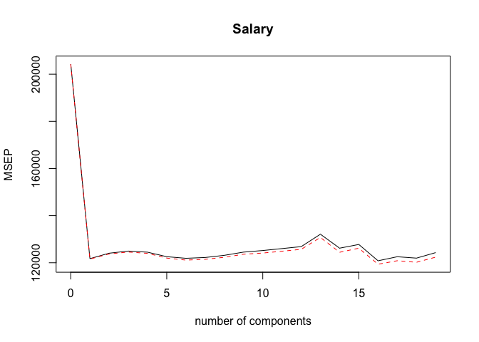
We can also perform PCR on a dataset split between training and test subsets. The syntax is identical to the previous exercise with the addition of a subset parameter indicating that the model should be estimated using only the training subset.
set.seed(1)
pcr.fit <- pcr(Salary ~ ., data = Hitters, subset = train, scale = TRUE, validation = "CV")
validationplot(pcr.fit, val.type = "MSEP")
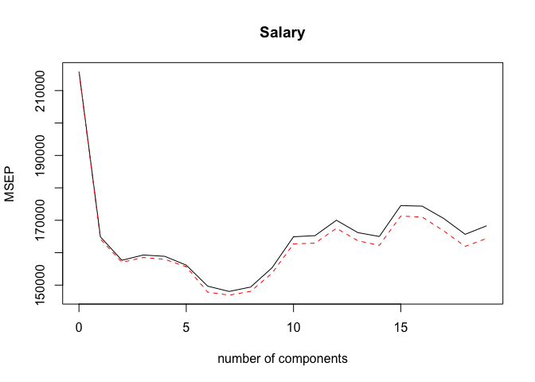
We can calculate the MSE by predicting the y with a value for ncomp that results in the lowest cross-validation error.
pcr.pred <- predict(pcr.fit, x[test, ], ncomp = 7)
mean((pcr.pred - y.test)^2)
## [1] 96556.22
pcr.fit <- pcr(y ~ x, scale = TRUE, ncomp = 7)
summary(pcr.fit)
## Data: X dimension: 263 19
## Y dimension: 263 1
## Fit method: svdpc
## Number of components considered: 7
## TRAINING: % variance explained
## 1 comps 2 comps 3 comps 4 comps 5 comps 6 comps 7 comps
## X 38.31 60.16 70.84 79.03 84.29 88.63 92.26
## y 40.63 41.58 42.17 43.22 44.90 46.48 46.69
6.7.2 Partial Least Squares
Partial Least Squares is also provided by the pls package, and has the same syntax as the pcr() function. We fit a PLS model using the plsr() function.
set.seed(1)
pls.fit <- plsr(Salary ~ ., data = Hitters, subset = train, scale = TRUE, validation = "CV")
summary(pls.fit)
## Data: X dimension: 131 19
## Y dimension: 131 1
## Fit method: kernelpls
## Number of components considered: 19
##
## VALIDATION: RMSEP
## Cross-validated using 10 random segments.
## (Intercept) 1 comps 2 comps 3 comps 4 comps 5 comps 6 comps
## CV 464.6 394.2 391.5 393.1 395.0 415.0 424.0
## adjCV 464.6 393.4 390.2 391.1 392.9 411.5 418.8
## 7 comps 8 comps 9 comps 10 comps 11 comps 12 comps 13 comps
## CV 424.5 415.8 404.6 407.1 412.0 414.4 410.3
## adjCV 418.9 411.4 400.7 402.2 407.2 409.3 405.6
## 14 comps 15 comps 16 comps 17 comps 18 comps 19 comps
## CV 406.2 408.6 410.5 408.8 407.8 410.2
## adjCV 401.8 403.9 405.6 404.1 403.2 405.5
##
## TRAINING: % variance explained
## 1 comps 2 comps 3 comps 4 comps 5 comps 6 comps 7 comps
## X 38.12 53.46 66.05 74.49 79.33 84.56 87.09
## Salary 33.58 38.96 41.57 42.43 44.04 45.59 47.05
## 8 comps 9 comps 10 comps 11 comps 12 comps 13 comps 14 comps
## X 90.74 92.55 93.94 97.23 97.88 98.35 98.85
## Salary 47.53 48.42 49.68 50.04 50.54 50.78 50.92
## 15 comps 16 comps 17 comps 18 comps 19 comps
## X 99.11 99.43 99.78 99.99 100.00
## Salary 51.04 51.11 51.15 51.16 51.18
validationplot(pls.fit, val.type = "MSEP")
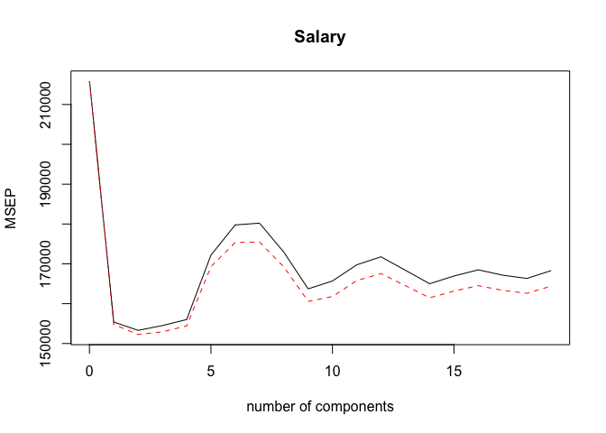
We perform cross-valiation on the test set in the same way and determine that the lowest cross-validation error is obtained with 2 components.
pls.pred <- predict(pls.fit, x[test, ], ncomp = 2)
mean((pls.pred - y.test)^2)
## [1] 101417.5
We can now run PLS on the full dataset with 2 components and display the summary of the results.
pls.fit <- plsr(Salary ~ ., data = Hitters, scale = TRUE, ncomp = 2)
summary(pls.fit)
## Data: X dimension: 263 19
## Y dimension: 263 1
## Fit method: kernelpls
## Number of components considered: 2
## TRAINING: % variance explained
## 1 comps 2 comps
## X 38.08 51.03
## Salary 43.05 46.40